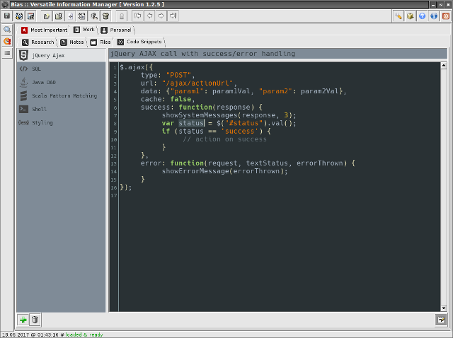

CodeSnippets
- хранение и редактирование фрагментов кода (поддерживается множество различных языков программирования).
Расширение предоставлено
Р. Касьяненко
, автором приложения Bias.
Предварительный просмотр:
